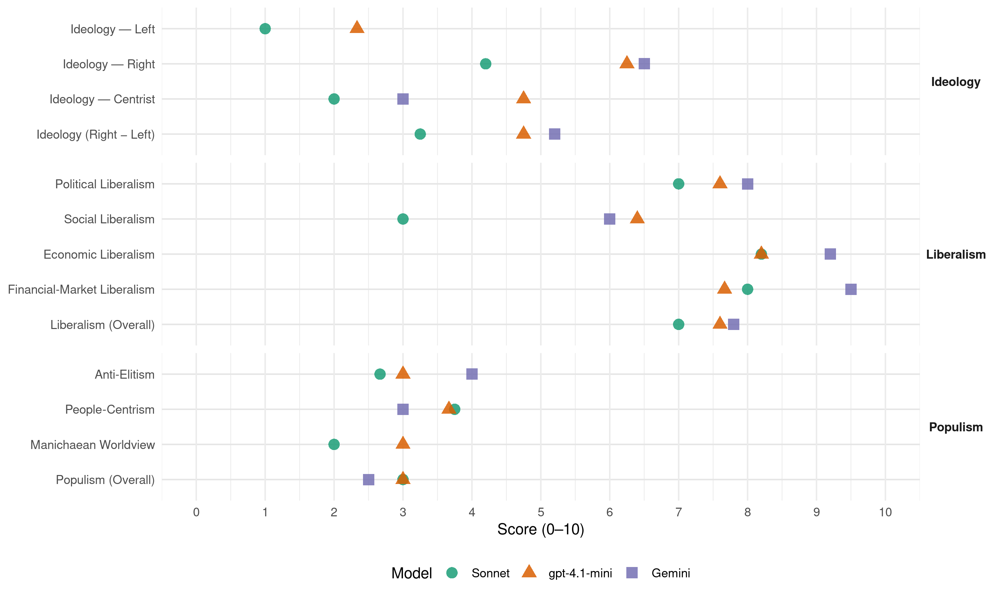

FrP (Norway, 2001)
manifesto_id 12951_200109
Get full text: This site shows derived annotations and short verbatim quotes only. The full manifesto text is © Manifesto Project / WZB — obtain it via manifesto-project.wzb.eu using the manifesto_id above.
Headline scores
| Dimension | Sonnet | gpt-4.1-mini | Gemini |
|---|---|---|---|
| Populism (Overall) | 3.0 | 3.0 | 2.5 |
| Anti-Elitism | 2.7 | 3.0 | 4.0 |
| People-Centrism | 3.8 | 3.7 | 3.0 |
| Manichaean Worldview | 2.0 | 3.0 | – |
| Ideology (Right − Left) | 3.2 | 4.8 | 5.2 |
| Liberalism (Overall) | 7.0 | 7.6 | 7.8 |
| Political Liberalism | 7.0 | 7.6 | 8.0 |
| Social Liberalism | 3.0 | 6.4 | 6.0 |
| Economic Liberalism | 8.2 | 8.2 | 9.2 |
| Financial-Market Liberalism | 8.0 | 7.7 | 9.5 |
Evidence per dimension
Economic Liberalism
Gemini · score 10.0 · verified · chunk 1
“markedsøkonomi der den enkelte fritt kan operere”
Fremskrittspartiet arbeider for markedsøkonomi der den enkelte fritt kan operere innenfor generelle
Gemini · score 10.0 · verified · chunk 2
“Motarbeide proteksjonisme og fremme frihandel”
vekst for norsk maritim virksomhet. 4 Motarbeide proteksjonisme og fremme frihandel. 5 Gi norske
Gemini · score 9.0 · verified · chunk 3
“Senke det totale skattetrykket”
FREMSKRITTSPARTIET VIL: 1 Senke det totale skattetrykket.
Gemini · score 9.0 · verified · chunk 4
“etablere et fullstendig markedsstyrt transportmarked”
fornyelsesverktøyet er å gjennomføre de lov- og forskriftsendringene som er nødvendige for å etablere et fullstendig markedsstyrt transportmarked.
Gemini · score 8.0 · verified · chunk 5
“åpenhet, frihet, frihandel og en fri”
før vi får et verdenssamfunn preget av åpenhet, frihet, frihandel og en fri menneskelig utfoldelse, noe som blant
gpt-4.1-mini · score 9.0 · verified · chunk 1
“Fremskrittspartiet arbeider for markedsøkonomi der den enkelte fritt kan operere innenfor generelle rammebetingelser trukket opp av myndighetene”
Fremskrittspartiet arbeider for markedsøkonomi der den enkelte fritt kan operere innenfor generelle rammebetingelser trukket opp av myndighetene. Det markedsøkonomiske system er fremfor alt et forbrukerdemokrati der den enkelte gjennom sine innkjøp gir signaler til produsenter og forhandlere om hvilke varer og tjenester de ønsker å konsumere.
gpt-4.1-mini · score 9.0 · verified · chunk 2
“motarbeide proteksjonisme og fremme frihandel”
Fremskrittspartiet vil oppheve en rekke restriksjoner for handelsnæringen, herunder åpningstidsbestemmelser, konsesjons-, løyve- og bevillingsbestemmelser, samt restriksjoner på etablering og lokalisering av nye virksomheter. Fremskrittspartiet vil tillate fri eksport, fri import og fri omsetning av alle lovlige varer, og vil arbeide for å påvirke andre land til å oppheve sine importbegrensninger.
gpt-4.1-mini · score 8.0 · verified · chunk 3
“Fremskrittspartiet vil senke det totale skattetrykket, slik at foreldre selv kan organisere sin tid”
Fremskrittspartiet vil senke det totale skattetrykket, slik at foreldre selv kan organisere sin tid på den måten som vil gi deres familieliv og barneoppdragelse den mest hensiktsmessige rammen.
gpt-4.1-mini · score 9.0 · verified · chunk 4
“Det bør legges til rette for et økt samspill mellom næringslivet og forskningsmiljøene, samt at forskningsresultater bør kunne tas i bruk til fordel for nasjonale arbeidsplasser”
Kunnskap blir den nye slagmarken for nasjoner, bedrifter og individer. Det bør legges til rette for et økt samspill mellom næringslivet og forskningsmiljøene, samt at forskningsresultater bør kunne tas i bruk til fordel for nasjonale arbeidsplasser som skaper verdier i et globalt miljø.
gpt-4.1-mini · score 6.0 · verified · chunk 5
“skattesystem som gjør det lønnsomt for arbeidstakere å arbeide”
Fremskrittspartiet ønsker et skattesystem som gjør det lønnsomt for arbeidstakere å arbeide – om ønskelig også ut over pensjonsalder – og som oppmuntrer arbeidsgivere til å gi et fleksibelt jobbtilbud som motiverer flest mulig arbeidsføre til å bruke sin arbeidskraft.
Sonnet · score 9.0 · verified · chunk 1
“markedsøkonomi der den enkelte fritt kan operere”
Fremskrittspartiet arbeider for markedsøkonomi der den enkelte fritt kan operere innenfor generelle rammebetingelser trukket opp av myndighetene
Sonnet · score 9.0 · verified · chunk 2
“Motarbeide proteksjonisme og fremme frihandel”
FREMSKRITTSPARTIET VIL: 1 Gi norsk skipsfart internasjonal handlefrihet. … 4 Motarbeide proteksjonisme og fremme frihandel.
Sonnet · score 8.0 · verified · chunk 3
“fri etableringsrett for helsepersonell”
Innføre fri etableringsrett for helsepersonell, og gi privatpraktiserende leger, kiropraktorer og fysioterapeuter tilskudd etter stykkpris.
Sonnet · score 8.0 · verified · chunk 4
“fullstendig markedsstyrt transportmarked”
Det viktigste moderniserings- og fornyelsesverktøyet er å gjennomføre de lov- og forskriftsendringene som er nødvendige for å etablere et fullstendig markedsstyrt transportmarked.
Sonnet · score 7.0 · verified · chunk 5
“frihandel, felles konkurranseregler og menneskelig frihet”
politiske områder som i sterk grad relaterer seg til frihandel, felles konkurranseregler og menneskelig frihet.
Financial-Market Liberalism
Gemini · score 10.0 · verified · chunk 1
“Kapitalmarkedet må være friest mulig”
KAPITALMARKEDET Kapitalmarkedet må være friest mulig, slik at kapitalen kanaliseres
Gemini · score 9.0 · verified · chunk 2
“fri og reell konkurranse mellom banker”
konkurransepolitikken. 13 Ha en fri og reell konkurranse mellom banker og andre kreditt-
gpt-4.1-mini · score 8.0 · verified · chunk 1
“Fremskrittspartiet vil selge statens eierandeler i norske banker og andre finansinstitusjoner”
Fremskrittspartiet vil selge statens eierandeler i norske banker og andre finansinstitusjoner. Fremskrittspartiet vil ha et uavhengig Kredittilsyn som skal sikre soliditeten i norsk finansvesen.
gpt-4.1-mini · score 8.0 · verified · chunk 2
“Ha en fri og reell konkurranse mellom banker og andre kreditt- og finansinstitusjoner”
Fremskrittspartiet vil sikre en aktiv håndheving av konkurransepolitikken. 13 Ha en fri og reell konkurranse mellom banker og andre kreditt- og finansinstitusjoner. 14 Ha et uavhengig Kredittilsyn som skal sikre soliditeten i norsk finansvesen.
gpt-4.1-mini · score 7.0 · verified · chunk 4
“Renter på lån i Lånekassen settes lik renten i det langsiktige kredittmarked.”
Fremskrittspartiet mener studiefinansieringen bør legges om slik at hardt arbeidende studenter belønnes. Renter på lån i Lånekassen settes lik renten i det langsiktige kredittmarked.
Sonnet · score 9.0 · verified · chunk 1
“Kapitalmarkedet må være friest mulig”
Kapitalmarkedet må være friest mulig, slik at kapitalen kanaliseres dit hvor den gjør størst nytte for seg
Sonnet · score 9.0 · verified · chunk 2
“fri og reell konkurranse mellom banker”
Ha en fri og reell konkurranse mellom banker og andre kreditt- og finansinstitusjoner. Ha et uavhengig Kredittilsyn som skal sikre soliditeten i norsk finansvesen.
Sonnet · score 7.0 · verified · chunk 3
“private pensjonsforsikringer”
Parallelt med Folketrygden vil Fremskrittspartiet gå inn for at flest mulig stimuleres til ytterligere å sikre sin alderdom gjennom utvidet bruk av private pensjonsforsikringer.
Sonnet · score 7.0 · verified · chunk 4
“renten i det langsiktige kredittmarked”
Renter på lån i Lånekassen settes lik renten i det langsiktige kredittmarked. FREMSKRITTSPARTIET VIL: 1 Kanalisere en økt del av støtten til studenter gjennom stipender.
Political Liberalism
Gemini · score 8.0 · verified · chunk 1
“demokratisk samfunn med sterkt begrenset statsmakt”
Fremskrittspartiet ønsker et demokratisk samfunn med sterkt begrenset statsmakt. I Fremskrittspartiets
Gemini · score 8.0 · verified · chunk 2
“uavhengig av regjering og storting”
påtalemyndighet i enkeltsaker skal utøve sine plikter uavhengig av regjering og storting.
Gemini · score 8.0 · verified · chunk 3
“nødvendige demokratiske prosesser i vårt samfunn”
der elevene i større grad lærer om nødvendige demokratiske prosesser i vårt samfunn, respekt for liv
Gemini · score 8.0 · verified · chunk 4
“forutsetning for demokrati og ytringsfrihet”
En fri og uavhengig presse er en forutsetning for demokrati og ytringsfrihet. En avis er ikke uavhengig
Gemini · score 8.0 · verified · chunk 5
“velfungerende demokratisk samfunn baseres på verdier”
reglene hos enkeltgrupper. Et velfungerende demokratisk samfunn baseres på verdier som rettssikkerhet, ytringsfrihet, eiendomsrett
gpt-4.1-mini · score 8.0 · verified · chunk 1
“Domstolene skal sikre at loven ikke anvendes i strid med Grunnloven”
Stortinget skal være den lovgivende og bevilgende myndighet, og Regjeringen skal være det utøvende organ, men den må gå av når den ikke lenger har Stortingets tillit. Domstolene skal sikre at loven ikke anvendes i strid med Grunnloven, og at Regjeringen og offentlig forvaltning ikke gir pålegg uten hjemmel i lov.
gpt-4.1-mini · score 7.0 · verified · chunk 2
“Domstolene må være uavhengige institusjoner som er i stand til å sikre rask og rettferdig behandling”
Personvern Fremskrittspartiet legger vekt på å sikre enkeltmenneskets rettssikkerhet. Domstolene må være uavhengige institusjoner som er i stand til å sikre rask og rettferdig behandling. Alle mennesker har rett til trygghet mot at statlige organer skal kontrollere privatlivet.
gpt-4.1-mini · score 8.0 · verified · chunk 3
“Folketrygdens hovedoppgaver skal være å sikre alle en nødvendig pensjonsinntekt ved alderdom, uførhet og dødsfall”
Folketrygdens hovedoppgaver skal være å sikre alle en nødvendig pensjonsinntekt ved alderdom, uførhet og dødsfall (etterlattepensjon), og pensjon til barn yngre enn 18 år hvis en eller begge av foreldrene er døde. Folketrygden skal dessuten sikre alle nødvendige helse- og omsorgstjenester og inntekt ved sykdom.
gpt-4.1-mini · score 8.0 · verified · chunk 4
“En fri og uavhengig presse er en forutsetning for demokrati og ytringsfrihet.”
En fri og uavhengig presse er en forutsetning for demokrati og ytringsfrihet. En avis er ikke uavhengig dersom den er avhengig av støtte fra staten. Etterhvert som avisene blir mer og mer avhengig av statsstøtte, vil uavhengig journalistikk vike plassen for næringspolitiske forsøk på å sikre mer støtte.
gpt-4.1-mini · score 7.0 · verified · chunk 5
“rettssikkerhet, ytringsfrihet, eiendomsrett, organisasjonsfrihet”
Et velfungerende demokratisk samfunn baseres på verdier som rettssikkerhet, ytringsfrihet, eiendomsrett, organisasjonsfrihet, likestilling og rett til å velge ektemake.
Sonnet · score 8.0 · verified · chunk 1
“Domstolene skal sikre at loven ikke anvendes”
Domstolene skal sikre at loven ikke anvendes i strid med Grunnloven, og at Regjeringen og offentlig forvaltning ikke gir pålegg uten hjemmel i lov
Sonnet · score 8.0 · verified · chunk 2
“Domstolene må være uavhengige institusjoner”
Fremskrittspartiet legger vekt på å sikre enkeltmenneskets rettssikkerhet. Domstolene må være uavhengige institusjoner som er i stand til å sikre rask og rettferdig behandling.
Sonnet · score 6.0 · verified · chunk 3
“demokratiske prosesser i vårt samfunn”
norsk, matematikk, naturfag, engelsk og et nytt samfunnsfag/demokratifag der elevene i større grad lærer om nødvendige demokratiske prosesser i vårt samfunn, respekt for liv og helse
Sonnet · score 7.0 · verified · chunk 4
“fri og uavhengig presse er en forutsetning for demokrati”
En fri og uavhengig presse er en forutsetning for demokrati og ytringsfrihet. En avis er ikke uavhengig dersom den er avhengig av støtte fra staten.
Sonnet · score 6.0 · verified · chunk 5
“rettssikkerhet, ytringsfrihet, eiendomsrett, organisasjonsfrihet”
Et velfungerende demokratisk samfunn baseres på verdier som rettssikkerhet, ytringsfrihet, eiendomsrett, organisasjonsfrihet, likestilling og rett til å velge ektemake.
Liberalism (Overall)
Gemini · score 9.0 · verified · chunk 1
“Fremskrittspartiet er et liberalistisk parti”
Fremskrittspartiets prinsipper 2001-2005 IDEOLOGISK GRUNNLAG Fremskrittspartiet er et liberalistisk parti. Det bygger på
Gemini · score 9.0 · verified · chunk 2
“Motarbeide proteksjonisme og fremme frihandel”
vekst for norsk maritim virksomhet. 4 Motarbeide proteksjonisme og fremme frihandel. 5 Gi norske
Gemini · score 7.0 · verified · chunk 3
“Senke det totale skattetrykket”
FREMSKRITTSPARTIET VIL: 1 Senke det totale skattetrykket.
Gemini · score 7.0 · verified · chunk 4
“etablere et fullstendig markedsstyrt transportmarked”
fornyelsesverktøyet er å gjennomføre de lov- og forskriftsendringene som er nødvendige for å etablere et fullstendig markedsstyrt transportmarked.
Gemini · score 7.0 · verified · chunk 5
“velfungerende demokratisk samfunn baseres på verdier”
reglene hos enkeltgrupper. Et velfungerende demokratisk samfunn baseres på verdier som rettssikkerhet, ytringsfrihet, eiendomsrett
gpt-4.1-mini · score 8.0 · verified · chunk 1
“Fremskrittspartiet arbeider for markedsøkonomi der den enkelte fritt kan operere innenfor generelle rammebetingelser trukket opp av myndighetene”
Fremskrittspartiet arbeider for markedsøkonomi der den enkelte fritt kan operere innenfor generelle rammebetingelser trukket opp av myndighetene. Det markedsøkonomiske system er fremfor alt et forbrukerdemokrati der den enkelte gjennom sine innkjøp gir signaler til produsenter og forhandlere om hvilke varer og tjenester de ønsker å konsumere.
gpt-4.1-mini · score 8.0 · verified · chunk 2
“motarbeide proteksjonisme og fremme frihandel”
Fremskrittspartiet vil oppheve en rekke restriksjoner for handelsnæringen, herunder åpningstidsbestemmelser, konsesjons-, løyve- og bevillingsbestemmelser, samt restriksjoner på etablering og lokalisering av nye virksomheter. Fremskrittspartiet vil tillate fri eksport, fri import og fri omsetning av alle lovlige varer, og vil arbeide for å påvirke andre land til å oppheve sine importbegrensninger.
gpt-4.1-mini · score 8.0 · verified · chunk 3
“Folketrygdens hovedoppgaver skal være å sikre alle en nødvendig pensjonsinntekt ved alderdom, uførhet og dødsfall”
Folketrygdens hovedoppgaver skal være å sikre alle en nødvendig pensjonsinntekt ved alderdom, uførhet og dødsfall (etterlattepensjon), og pensjon til barn yngre enn 18 år hvis en eller begge av foreldrene er døde. Folketrygden skal dessuten sikre alle nødvendige helse- og omsorgstjenester og inntekt ved sykdom.
gpt-4.1-mini · score 8.0 · verified · chunk 4
“En fri og uavhengig presse er en forutsetning for demokrati og ytringsfrihet.”
En fri og uavhengig presse er en forutsetning for demokrati og ytringsfrihet. En avis er ikke uavhengig dersom den er avhengig av støtte fra staten. Etterhvert som avisene blir mer og mer avhengig av statsstøtte, vil uavhengig journalistikk vike plassen for næringspolitiske forsøk på å sikre mer støtte.
gpt-4.1-mini · score 6.0 · verified · chunk 5
“rettssikkerhet, ytringsfrihet, eiendomsrett, organisasjonsfrihet”
Et velfungerende demokratisk samfunn baseres på verdier som rettssikkerhet, ytringsfrihet, eiendomsrett, organisasjonsfrihet, likestilling og rett til å velge ektemake.
Sonnet · score 8.0 · verified · chunk 1
“Fremskrittspartiet er et liberalistisk parti”
IDEOLOGISK GRUNNLAG Fremskrittspartiet er et liberalistisk parti. Det bygger på Norges grunnlov, norsk og vestlig tradisjon
Sonnet · score 8.0 · verified · chunk 2
“Motarbeide proteksjonisme og fremme frihandel”
FREMSKRITTSPARTIET VIL: 1 Gi norsk skipsfart internasjonal handlefrihet. … 4 Motarbeide proteksjonisme og fremme frihandel.
Sonnet · score 6.0 · verified · chunk 3
“fri etableringsrett for helsepersonell”
Innføre fri etableringsrett for helsepersonell, og gi privatpraktiserende leger, kiropraktorer og fysioterapeuter tilskudd etter stykkpris.
Sonnet · score 7.0 · verified · chunk 4
“fullstendig markedsstyrt transportmarked”
Det viktigste moderniserings- og fornyelsesverktøyet er å gjennomføre de lov- og forskriftsendringene som er nødvendige for å etablere et fullstendig markedsstyrt transportmarked.
Sonnet · score 6.0 · verified · chunk 5
“åpenhet, frihet, frihandel og en fri menneskelig utfoldelse”
vi får et verdenssamfunn preget av åpenhet, frihet, frihandel og en fri menneskelig utfoldelse, noe som blant annet skyldes store kulturelle barrierer
Anti-Elitism
Gemini · score 4.0 · verified · chunk 1
“byråkratiet for stor makt over det enkelte mennesket”
Dette gir byråkratiet for stor makt over det enkelte mennesket, og gjør det vanskelig for den enkelte
Gemini · score 4.0 · verified · chunk 2
“ansatt et offentlig byråkrati som har til oppgave”
ressurssløsing når vi har ansatt et offentlig byråkrati som har til oppgave å gjennomgå reklamen
Gemini · score 4.0 · verified · chunk 3
“politikere, byråkrater og organisasjoner har for stor makt”
Fremskrittspartiet mener at politikere, byråkrater og organisasjoner har for stor makt over undervisningen, og vil derfor aktivisere foreldre
Gemini · score 4.0 · verified · chunk 4
“lærerkreftene i dag har for stor makt”
sektoren bør styres på en annen måte, fordi lærerkreftene i dag har for stor makt på bekostning av studentene.
gpt-4.1-mini · score 2.0 · verified · chunk 1
“maktkonsentrasjon hos det offentlige som en trussel mot den enkeltes frihet”
Fremskrittspartiet ser maktkonsentrasjon hos det offentlige som en trussel mot den enkeltes frihet. Fremskrittspartiet går derfor inn for at staten og andre offentlige organer skal konsentrere seg om oppgaver som enkeltmennesker, organisasjoner og bedrifter ikke kan løse selv.
gpt-4.1-mini · score 2.0 · verified · chunk 2
“motarbeide proteksjonisme og fremme frihandel”
Fremskrittspartiet vil oppheve en rekke restriksjoner for handelsnæringen, herunder åpningstidsbestemmelser, konsesjons-, løyve- og bevillingsbestemmelser, samt restriksjoner på etablering og lokalisering av nye virksomheter. Fremskrittspartiet vil tillate fri eksport, fri import og fri omsetning av alle lovlige varer, og vil arbeide for å påvirke andre land til å oppheve sine importbegrensninger.
gpt-4.1-mini · score 2.0 · verified · chunk 4
“Fremskrittspartiet har kvittet seg helt med den foreldede forestillingen om at rikdom er et resultat av maktmisbruk”
…rikdom er et resultat av maktmisbruk, tyveri eller utbytting, og derfor er moralsk forkastelig. I våre moderne demokratier er rikdom og utvikling først og fremst et resultat av menneskers evne til nytenkning og nyskapning. Dette preger også Fremskrittspartiet sitt syn på utviklingshjelp.
gpt-4.1-mini · score 6.0 · verified · chunk 5
“innvandringsstoppen opprettholdes og håndheves strengt”
Fremskrittspartiet vil: 1 At innvandringsstoppen opprettholdes og håndheves strengt. 2 At eventuelt mottak av flyktninger må avgjøres av den enkelte kommune selv og ikke kunne pålegges av statlige myndigheter.
Sonnet · score 3.0 · verified · chunk 1
“statlige manipulasjoner får en rimelig erstatning”
aksjonærer i norske banker som mistet sine sparepenger på grunn av statlige manipulasjoner får en rimelig erstatning
Sonnet · score 2.0 · mixed · chunk 2
“politikere og byråkrater”
Den beste formen for distriktspolitikk vil være at bedriftene får beholde en større del av sin egen verdiskapning. Distriktspolitikken må ikke være selektiv i den forstand at det gis støtte til enkeltbedrifter og spesielle næringer utpekt av politikere og byråkrater.
Sonnet · score 3.0 · verified · chunk 3
“politikere, byråkrater og organisasjoner har for stor makt”
Fremskrittspartiet mener at politikere, byråkrater og organisasjoner har for stor makt over undervisningen, og vil derfor aktivisere foreldre, lærere og elever.
Sonnet · score 3.0 · mixed · chunk 4
“lærerkreftene i dag har for stor makt”
Fremskrittspartiet mener denne sektoren bør styres på en annen måte, fordi lærerkreftene i dag har for stor makt på bekostning av studentene. Dette fører til feilaktig ressursdisponering.
Sonnet · score 2.0 · verified · chunk 5
“statens makt er for omfattende”
Slike hindringer kan være en følge av at statens makt er for omfattende. Men de kan også skyldes nasjonale grenser
Ideology — Centrist
Gemini · score 3.0 · verified · chunk 2
“ansatt et offentlig byråkrati som har til oppgave”
ressurssløsing når vi har ansatt et offentlig byråkrati som har til oppgave å gjennomgå reklamen
gpt-4.1-mini · score 7.0 · verified · chunk 1
“Fremskrittspartiets politikk bygger på folkestyre, med desentralisert politisk makt og avgjørelse i folkevalgte organer”
Fremskrittspartiets politikk bygger på folkestyre, med desentralisert politisk makt og avgjørelse i folkevalgte organer. Fremskrittspartiet går inn for å lovfeste bindende folkeavstemninger som en del av vårt konstitusjonelle system.
gpt-4.1-mini · score 3.0 · verified · chunk 2
“frihandelssoner i enkelte distrikter der handelshindringer og andre lover som regulerer næringsvirksomheten skal oppheves”
Fremskrittspartiet vil understreke betydningen av den høye verdiskapningen som finner sted i distriktene, og vil derfor legge forholdene til rette for økt utbygging av infrastruktur, både for å bidra til at avstanden til markedene ikke blir en for kritisk konkurransefaktor for bedriftene, og for å sørge for en sikrere og raskere fremkommelighet for folk bosatt i distriktene. FREMSKRITTSPARTIET VIL: 5 Begynne med å innføre frihandelssoner i enkelte distrikter der handelshindringer og andre lover som regulerer næringsvirksomheten skal oppheves.
gpt-4.1-mini · score 5.0 · verified · chunk 4
“Det gjelder også skrevne og uskrevne regler for oppførsel i skoler, offentlige institusjoner, arbeidsplasser”
…verdier som rettssikkerhet, ytringsfrihet, eiendomsrett, organisasjonsfrihet, likestilling og rett til å velge ektemake. Det gjelder også skrevne og uskrevne regler for oppførsel i skoler, offentlige institusjoner, arbeidsplasser, idrettsforeninger, borettslag, nærmiljøer og i det offentlige rom. Disse reglene må respekteres av alle borgere, uansett opprinnelse.
gpt-4.1-mini · score 4.0 · verified · chunk 5
“det norske folk har sagt nei til norsk medlemskap i EU”
Fremskrittspartiet tar til etterretning at det norske folk har sagt nei til norsk medlemskap i EU. Dersom Norge på ny skal søke om medlemskap, må det først avholdes folkeavstemning om hvorvidt slik søknad skal sendes.
Sonnet · score 2.0 · verified · chunk 1
“folk flest vil respektere”
Fremskrittspartiet ønsker et skattesystem som folk flest vil respektere og som avspeiler det reelle finansieringsbehov
Sonnet · score 2.0 · mixed · chunk 2
“overflødig byråkrati i Miljøverndepartementet”
Fremskrittspartiet vil således jobbe for å redusere overflødig byråkrati i Miljøverndepartementet, hos fylkesmennene og i kommunene.
Sonnet · score 2.0 · verified · chunk 3
“frivillighet og valgfrihet”
Fremskrittspartiet mener at alle deler av familiepolitikken må ta utgangspunkt i frivillighet og valgfrihet.
Sonnet · score 2.0 · verified · chunk 4
“folk selv kan bruke sine midler”
Fremskrittspartiet vil ha et åpent marked for kultur, hvor folk selv kan bruke sine midler på de kulturgoder de ønsker å benytte seg av eller støtte opp om.
Sonnet · score 2.0 · verified · chunk 5
“enkeltmenneskets frihet og selvråderett”
Fremskrittspartiet har enkeltmenneskets frihet og selvråderett som en vesentlig målsetting.
Ideology — Left
gpt-4.1-mini · score 2.0 · verified · chunk 2
“avvikle kjerneområdene for rovvilt”
Fremskrittspartiet vil arbeide for at det skal bli enklere å få fellingstillatelser på skadedyr (rovdyr), samt at rovdyrforvaltningen legges til folkevalgte organer på kommunalt nivå. FREMSKRITTSPARTIET VIL: 4 Avvikle kjerneområdene for rovvilt.
gpt-4.1-mini · score 3.0 · verified · chunk 4
“Fremskrittspartiet vil gjennom demokratiske virkemidler hjelpe utviklingslandene med å kvitte seg med sine despotiske regimer”
…Fremskrittspartiet vil gjennom demokratiske virkemidler hjelpe utviklingslandene med å kvitte seg med sine despotiske regimer som krenker menneskerettighetene og benytter utviklingshjelp til å berike den herskende klassen, enten de setter pengene i utenlandske banker, bruker dem til å finansiere kriger eller til å undertrykke sin egen befolkning.
gpt-4.1-mini · score 2.0 · verified · chunk 5
“lik behandling av nordmenn og innvandrere”
Fremskrittspartiet ønsker lik behandling av nordmenn og innvandrere, og tar sterk avstand fra enhver form for forskjellsbehandling basert på hudfarge, rase, kulturell, etnisk eller religiøs tilknytning.
Sonnet · score 1.0 · verified · chunk 1
“Avvikle offentlige monopolordninger”
FREMSKRITTSPARTIET VIL: 1 Avvikle offentlige monopolordninger. 2 Oppheve omsetningsloven
Sonnet · score 1.0 · verified · chunk 3
“Senke det totale skattetrykket”
FREMSKRITTSPARTIET VIL: 1 Senke det totale skattetrykket. 2 Innføre ektefelledelt beskatning.
Sonnet · score 1.0 · verified · chunk 4
“Frihandel er den beste form for global arbeidsdeling”
Frihandel er den beste form for global arbeidsdeling med gjensidige fordeler av samhandel. Fremskrittspartiet støtter FNs beslutning om det jødiske folks rett til et nasjonalt hjemland i Israel.
Sonnet · score 1.0 · verified · chunk 5
“omstilling i landbruket og offentlig sektor”
legges til rette for en omstilling som sikrer samfunnsøkonomisk god utnyttelse av landets samlede arbeidskraft, gjennom for eksempel omstilling i landbruket og offentlig sektor
Ideology (Right − Left)
Gemini · score 4.0 · verified · chunk 1
“avskaffe Sametinget”
Fremskrittspartiet vil derfor avskaffe Sametinget.
Gemini · score 2.0 · verified · chunk 2
“ansatt et offentlig byråkrati som har til oppgave”
ressurssløsing når vi har ansatt et offentlig byråkrati som har til oppgave å gjennomgå reklamen
Gemini · score 4.0 · verified · chunk 3
“håndtere større flyktningmengder ved landets grenser”
arbeide for å legge forholdene til rette for å håndtere større flyktningmengder ved landets grenser.
Gemini · score 8.0 · verified · chunk 4
“opprettholde innvandringsstoppen”
vil derfor opprettholde innvandringsstoppen. Unntatt fra dette er overføringsflyktninger
Gemini · score 8.0 · verified · chunk 5
“opprettholde innvandringsstoppen”
som gis opphold i Norge, og vil derfor opprettholde innvandringsstoppen. Unntatt fra dette er overføringsflyktninger
gpt-4.1-mini · score 4.0 · verified · chunk 1
“Fremskrittspartiets politikk bygger på folkestyre, med desentralisert politisk makt og avgjørelse i folkevalgte organer”
Fremskrittspartiets politikk bygger på folkestyre, med desentralisert politisk makt og avgjørelse i folkevalgte organer. Fremskrittspartiet går inn for å lovfeste bindende folkeavstemninger som en del av vårt konstitusjonelle system.
gpt-4.1-mini · score 4.0 · verified · chunk 2
“motarbeide proteksjonisme og fremme frihandel”
Fremskrittspartiet vil oppheve en rekke restriksjoner for handelsnæringen, herunder åpningstidsbestemmelser, konsesjons-, løyve- og bevillingsbestemmelser, samt restriksjoner på etablering og lokalisering av nye virksomheter. Fremskrittspartiet vil tillate fri eksport, fri import og fri omsetning av alle lovlige varer, og vil arbeide for å påvirke andre land til å oppheve sine importbegrensninger.
gpt-4.1-mini · score 5.0 · verified · chunk 4
“Fremskrittspartiet vil begrense antall utlendinger (fra land utenfor EØS-området) som gis opphold i Norge”
…Fremskrittspartiet vil begrense antall utlendinger (fra land utenfor EØS-området) som gis opphold i Norge, og vil derfor opprettholde innvandringsstoppen. Unntatt fra dette er overføringsflyktninger (kvoteflyktninger) og de som omtales i avsnittet om arbeidsmarkedet, samt familiemedlemmer som omfattes av reglene om familiegjenforening.
gpt-4.1-mini · score 6.0 · verified · chunk 5
“innvandringsstoppen opprettholdes og håndheves strengt”
Fremskrittspartiet vil: 1 At innvandringsstoppen opprettholdes og håndheves strengt. 3 At Norge hvert år maksimalt skal motta til sammen 1000 mennesker fra land utenfor den vestlige kulturkrets.
Sonnet · score 2.0 · verified · chunk 1
“folk flest vil respektere”
Fremskrittspartiet ønsker et skattesystem som folk flest vil respektere og som avspeiler det reelle finansieringsbehov
Sonnet · score 2.0 · mixed · chunk 2
“politikere og byråkrater”
Distriktspolitikken må ikke være selektiv i den forstand at det gis støtte til enkeltbedrifter og spesielle næringer utpekt av politikere og byråkrater.
Sonnet · score 3.0 · verified · chunk 3
“Sosialistenes enhetsskole har skapt tapere”
Sosialistenes enhetsskole har skapt tapere. Fremskrittspartiet ønsker en differensiert skole som gjør at elever med forskjellige interesser fullt ut kan utnytte sine evner.
Sonnet · score 3.0 · verified · chunk 4
“vil begrense antall utlendinger”
Fremskrittspartiet vil begrense antall utlendinger (fra land utenfor EØS-området) som gis opphold i Norge, og vil derfor opprettholde innvandringsstoppen.
Sonnet · score 5.0 · verified · chunk 5
“innvandringsstoppen opprettholdes og håndheves strengt”
FREMSKRITTSPARTIET VIL: 1 At innvandringsstoppen opprettholdes og håndheves strengt.
Ideology — Right
Gemini · score 5.0 · verified · chunk 1
“avskaffe Sametinget”
Fremskrittspartiet vil derfor avskaffe Sametinget.
Gemini · score 5.0 · verified · chunk 3
“håndtere større flyktningmengder ved landets grenser”
arbeide for å legge forholdene til rette for å håndtere større flyktningmengder ved landets grenser.
Gemini · score 8.0 · verified · chunk 4
“opprettholde innvandringsstoppen”
vil derfor opprettholde innvandringsstoppen. Unntatt fra dette er overføringsflyktninger
Gemini · score 8.0 · verified · chunk 5
“opprettholde innvandringsstoppen”
som gis opphold i Norge, og vil derfor opprettholde innvandringsstoppen. Unntatt fra dette er overføringsflyktninger
gpt-4.1-mini · score 3.0 · verified · chunk 1
“Fremskrittspartiet ser på Norges grunnlov, norsk og vestlig tradisjon og kulturarv med basis i det kristne livssyn”
Fremskrittspartiet er et liberalistisk parti. Det bygger på Norges grunnlov, norsk og vestlig tradisjon og kulturarv med basis i det kristne livssyn.
gpt-4.1-mini · score 7.0 · verified · chunk 2
“utenlandske terrorister og krigsforbrytere under ingen omstendigheter får innreisetillatelse”
Fremskrittspartiet vil hindre tvungen rituell omskjæring for begge kjønn. FREMSKRITTSPARTIET VIL: 7 At utenlandske terrorister og krigsforbrytere under ingen omstendigheter får innreisetillatelse/oppholdstillatelse i Norge.
gpt-4.1-mini · score 7.0 · verified · chunk 4
“Fremskrittspartiet vil begrense antall utlendinger (fra land utenfor EØS-området) som gis opphold i Norge”
…Fremskrittspartiet vil begrense antall utlendinger (fra land utenfor EØS-området) som gis opphold i Norge, og vil derfor opprettholde innvandringsstoppen. Unntatt fra dette er overføringsflyktninger (kvoteflyktninger) og de som omtales i avsnittet om arbeidsmarkedet, samt familiemedlemmer som omfattes av reglene om familiegjenforening.
gpt-4.1-mini · score 8.0 · verified · chunk 5
“innvandringsstoppen opprettholdes og håndheves strengt”
Fremskrittspartiet vil: 1 At innvandringsstoppen opprettholdes og håndheves strengt. 3 At Norge hvert år maksimalt skal motta til sammen 1000 mennesker fra land utenfor den vestlige kulturkrets.
Sonnet · score 3.0 · verified · chunk 1
“INNVANDRINGS- OG FLYKTNINGPOLITIKK”
Norge og verden: INNVANDRINGS- OG FLYKTNINGPOLITIKK, ORDVALGET, SOSIALE YTELSER, ØKONOMI, ARBEIDSMARKEDET, FLYKTNINGER
Sonnet · score 2.0 · verified · chunk 2
“utenlandske statsborgere som dømmes for forbrytelser”
Sørge for at utenlandske statsborgere som dømmes for forbrytelser med strafferamme fra ubetinget fengsel i 3 måneder og oppover, automatisk utvises fra landet etter endt soning
Sonnet · score 4.0 · verified · chunk 3
“Ikke la homofile få adgang til å adoptere barn”
FREMSKRITTSPARTIET VIL: 1 Ikke la homofile få adgang til å adoptere barn.
Sonnet · score 5.0 · verified · chunk 4
“vil begrense antall utlendinger”
Fremskrittspartiet vil begrense antall utlendinger (fra land utenfor EØS-området) som gis opphold i Norge, og vil derfor opprettholde innvandringsstoppen.
Sonnet · score 7.0 · verified · chunk 5
“innvandringsstoppen opprettholdes og håndheves strengt”
FREMSKRITTSPARTIET VIL: 1 At innvandringsstoppen opprettholdes og håndheves strengt.
Manichaean Worldview
gpt-4.1-mini · score 2.0 · verified · chunk 4
“Når for eksempel et lands myndigheter dømmer norske borgere til døden for å ha praktisert den grunnlovsbeskyttede ytringsfrihet på norsk territorium, er dialogens tid forbi.”
…dialogens tid forbi. Fremskrittspartiet mener det er naivt å tro at diktatorer rundt omkring i verden er ukjent med menneskerettighetene. Grunnen til at de ikke respekterer menneskerettighetene, er at de er mer opptatt av å knuse sine motstandere og konkurrenter.
gpt-4.1-mini · score 4.0 · verified · chunk 5
“motsetninger mellom folkegrupper i Norge”
Det er grunn til å frykte at en fortsatt innvandring av asylsøkere av bare tilnærmet det omfang som man har hatt i de senere år, vil føre til alvorlige motsetninger mellom folkegrupper i Norge.
Sonnet · score 2.0 · verified · chunk 1
“trussel mot enkeltmenneskets utfoldelsesmulighet”
Fremskrittspartiet anser den stadig omseggripende stat og offentlige byråkrati som en trussel mot enkeltmenneskets utfoldelsesmulighet
Sonnet · score 2.0 · verified · chunk 3
“Sosialistenes enhetsskole har skapt tapere”
Sosialistenes enhetsskole har skapt tapere. Fremskrittspartiet ønsker en differensiert skole som gjør at elever med forskjellige interesser fullt ut kan utnytte sine evner.
Sonnet · score 2.0 · verified · chunk 4
“hykleriet det representerer”
Som et liberalistisk parti er Fremskrittspartiet det første til å ta avstand fra de rike lands egoisme og det hykleriet det representerer når de finner på alle mulige påskudd for å forhindre at fattige land fritt kan få selge sine varer.
Sonnet · score 2.0 · verified · chunk 5
“alvorlig kriminalitet og manglende samfunnstilpasning”
følger det store problemer i innvandringens kjølvann, som alvorlig kriminalitet og manglende samfunnstilpasning
People-Centrism
Gemini · score 3.0 · verified · chunk 1
“forståelig og anvendelig for folk flest”
form og innhold, slik at det blir forståelig og anvendelig for folk flest. Lovene må utformes
gpt-4.1-mini · score 3.0 · verified · chunk 1
“en demokratisk rettsstat forutsetter både et demokratisk statsstyre og et markedsøkonomisk system”
Den demokratiske rettsstat forutsetter både et demokratisk statsstyre og et markedsøkonomisk system. Bare et markedsøkonomisk system kan sikre den spredning av makt som en demokratisk rettsstat er avhengig av.
gpt-4.1-mini · score 3.0 · verified · chunk 4
“Det gjelder også skrevne og uskrevne regler for oppførsel i skoler, offentlige institusjoner, arbeidsplasser, idrettsforeninger, borettslag, nærmiljøer og i det offentlige rom.”
…verdier som rettssikkerhet, ytringsfrihet, eiendomsrett, organisasjonsfrihet, likestilling og rett til å velge ektemake. Det gjelder også skrevne og uskrevne regler for oppførsel i skoler, offentlige institusjoner, arbeidsplasser, idrettsforeninger, borettslag, nærmiljøer og i det offentlige rom. Disse reglene må respekteres av alle borgere, uansett opprinnelse.
gpt-4.1-mini · score 5.0 · verified · chunk 5
“det norske folk har sagt nei til norsk medlemskap i EU”
Fremskrittspartiet tar til etterretning at det norske folk har sagt nei til norsk medlemskap i EU. Dersom Norge på ny skal søke om medlemskap, må det først avholdes folkeavstemning om hvorvidt slik søknad skal sendes.
Sonnet · score 4.0 · verified · chunk 1
“folkestyre, med desentralisert politisk makt”
Fremskrittspartiets politikk bygger på folkestyre, med desentralisert politisk makt og avgjørelse i folkevalgte organer
Sonnet · score 2.0 · mixed · chunk 2
“forbrukernes selvstendige vurderingsevne”
Slike reklameforbud bidrar til monopolisering av markedene og hindrer fremveksten av nye og bedre, og kanskje mindre helseskadelige produkter. Samtidig begrenser slike forbud den enkelte forbrukers valgmulighet, og de innebærer også en nedvurdering av forbrukernes selvstendige vurderingsevne.
Sonnet · score 3.0 · verified · chunk 3
“hvert enkelt menneske selv har hovedansvaret”
Fremskrittspartiet vil understreke at hvert enkelt menneske selv har hovedansvaret for å sørge for seg og sine nærmeste.
Sonnet · score 4.0 · verified · chunk 4
“pengene kommer folk flest til gode”
Der det offentlige bruker penger på kulturtiltak, er det viktig at pengene kommer folk flest til gode og at støtten gis som tilskudd.
Sonnet · score 4.0 · verified · chunk 5
“det norske folks nei til EU-medlemskap”
da må det norske folks nei til EU-medlemskap fra 1994 respekteres. En ny EU-kamp nå vil kun bidra til å splitte nasjonen
Populism (Overall)
Gemini · score 3.0 · verified · chunk 1
“byråkratiet for stor makt over det enkelte mennesket”
Dette gir byråkratiet for stor makt over det enkelte mennesket, og gjør det vanskelig for den enkelte
Gemini · score 2.0 · verified · chunk 2
“ansatt et offentlig byråkrati som har til oppgave”
ressurssløsing når vi har ansatt et offentlig byråkrati som har til oppgave å gjennomgå reklamen
Gemini · score 3.0 · verified · chunk 3
“politikere, byråkrater og organisasjoner har for stor makt”
Fremskrittspartiet mener at politikere, byråkrater og organisasjoner har for stor makt over undervisningen, og vil derfor aktivisere foreldre
Gemini · score 2.0 · verified · chunk 4
“lærerkreftene i dag har for stor makt”
sektoren bør styres på en annen måte, fordi lærerkreftene i dag har for stor makt på bekostning av studentene.
gpt-4.1-mini · score 2.0 · verified · chunk 1
“maktkonsentrasjon hos det offentlige som en trussel mot den enkeltes frihet”
Fremskrittspartiet ser maktkonsentrasjon hos det offentlige som en trussel mot den enkeltes frihet. Fremskrittspartiet går derfor inn for at staten og andre offentlige organer skal konsentrere seg om oppgaver som enkeltmennesker, organisasjoner og bedrifter ikke kan løse selv.
gpt-4.1-mini · score 2.0 · verified · chunk 4
“Fremskrittspartiet har kvittet seg helt med den foreldede forestillingen om at rikdom er et resultat av maktmisbruk”
…rikdom er et resultat av maktmisbruk, tyveri eller utbytting, og derfor er moralsk forkastelig. I våre moderne demokratier er rikdom og utvikling først og fremst et resultat av menneskers evne til nytenkning og nyskapning. Dette preger også Fremskrittspartiet sitt syn på utviklingshjelp.
gpt-4.1-mini · score 5.0 · verified · chunk 5
“innvandringsstoppen opprettholdes og håndheves strengt”
Fremskrittspartiet vil: 1 At innvandringsstoppen opprettholdes og håndheves strengt. 2 At eventuelt mottak av flyktninger må avgjøres av den enkelte kommune selv og ikke kunne pålegges av statlige myndigheter.
Sonnet · score 3.0 · verified · chunk 1
“folkestyre, med desentralisert politisk makt”
Fremskrittspartiets politikk bygger på folkestyre, med desentralisert politisk makt og avgjørelse i folkevalgte organer
Sonnet · score 2.0 · mixed · chunk 2
“politikere og byråkrater”
Distriktspolitikken må ikke være selektiv i den forstand at det gis støtte til enkeltbedrifter og spesielle næringer utpekt av politikere og byråkrater.
Sonnet · score 3.0 · verified · chunk 3
“politikere, byråkrater og organisasjoner har for stor makt”
Fremskrittspartiet mener at politikere, byråkrater og organisasjoner har for stor makt over undervisningen, og vil derfor aktivisere foreldre, lærere og elever.
Sonnet · score 3.0 · verified · chunk 4
“pengene kommer folk flest til gode”
Der det offentlige bruker penger på kulturtiltak, er det viktig at pengene kommer folk flest til gode og at støtten gis som tilskudd.
Sonnet · score 3.0 · verified · chunk 5
“det norske folks nei til EU-medlemskap”
da må det norske folks nei til EU-medlemskap fra 1994 respekteres. En ny EU-kamp nå vil kun bidra til å splitte nasjonen
Social Liberalism